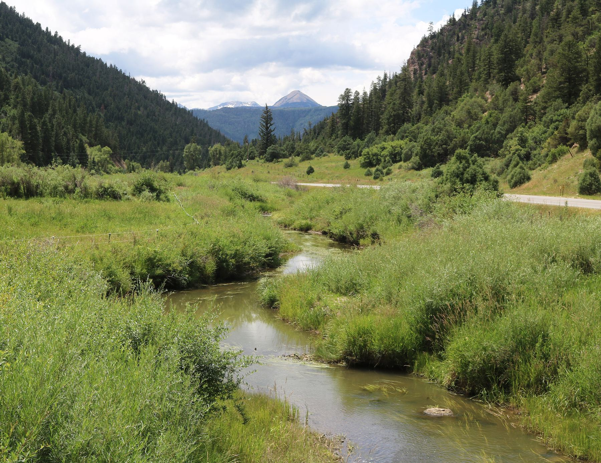
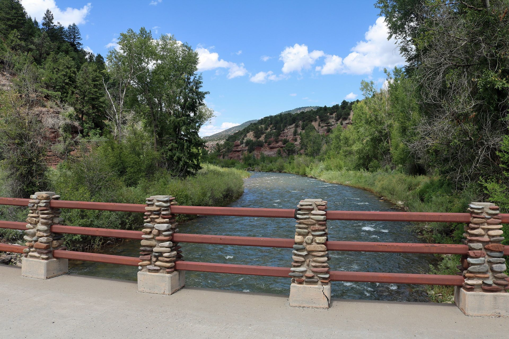

01
Parcels of 35 acres and up
Most subdivisions here, from Last Dollar Tracts to Old Elam Ranch.
View homes


Hastings Mesa, Colorado
Ranch parcels and smaller lots between Sawpit and Dallas Divide, and how you reach each one in winter.
Hastings Mesa at a glance
Hastings Mesa lies north of Last Dollar Mountain and east of Leopard Creek Canyon, in San Miguel County. County Road 58P climbs onto it from Sawpit and crosses it to CO-62 near Dallas Divide, and most of its subdivisions are parcels of 35 acres or more.
Every named subdivision on it maps to Telluride School District R-1 and the Telluride Fire Protection District. Dallas Divide, the CO-62 summit at its northeast corner, is where the Ouray County line runs; the Census puts the divide itself in Ouray County and the Ridgway School District R-2. In summer, Last Dollar Road continues over Last Dollar Pass to Deep Creek Mesa; the pass is closed to vehicles from December 1 to May 15.
Saved searches
Each card opens a live search of MLS listings, updated as they change.
01
Most subdivisions here, from Last Dollar Tracts to Old Elam Ranch.
View homes

02

03
04
<!-- IDX_ZONE: homes-for-sale-hastings-mesa-feed -->
The newest Hastings Mesa listings in one compact row, six to eight homes. Builder places the Showcase hotsheet shortcode here in its compact layout.

Last Dollar Road (County Road 58P) leaves CO-62 at the top of Dallas Divide. These three sit nearest that end, about 28 to 31 road miles from downtown Telluride.

On the east side of the mesa, toward Last Dollar Pass. The county does not plow the 4.2-mile branch of County Road 58P toward the pass, which runs past Cradle Park.
The southwest end sits above Sawpit, about 16.5 to 18 road miles from downtown, and County Road 56V comes in from CO-62 on the west side; the county plows both roads. Colorado's 35-acre rule explains the sizes: parcels of 35 acres or more fall outside the county subdivision definition (C.R.S. 30-28-101(10)).

Day to day
School information is factual and by district. Always confirm a specific address in the district's school finder.
Questions
San Miguel County. Every named subdivision on the mesa is in San Miguel County in county records. The Ouray County line runs near Dallas Divide, at the mesa's northeast corner.
On County Road 58P from Sawpit, which the county plows for about 7.1 miles to CO-62, or on County Road 56V from CO-62. Last Dollar Pass is closed to vehicles from December 1 to May 15.
Most subdivisions are parcels of 35 acres or more in county records. San Juan Vista, Hastings Mesa Estate and Telluride Pines have smaller lots, with medians of about 6.5, 8.8 and 5 acres.
No. Last Dollar Tracts sits at the CO-62 end of Last Dollar Road, on Hastings Mesa. The Last Dollar PUD is a separate subdivision near the airport turnoff on Deep Creek Mesa, about 10 miles south.
Nearby




Resources
Contact
Tell him how you want to reach a lot in January, and he will start with the subdivisions where that works.